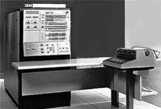
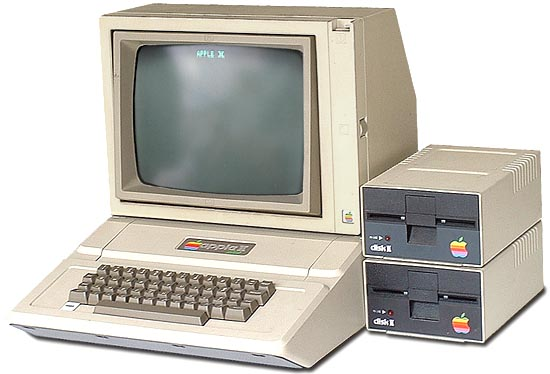
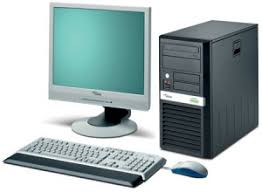
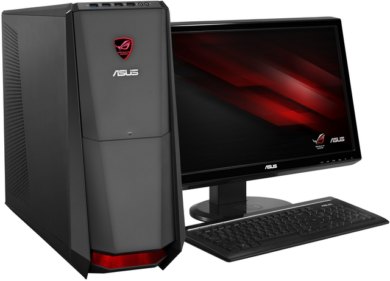

Komputer Generasi Pertama menggunakan beberapa tabung vakum yang besar dan kompleks seperti crystal diodes, relays, resistors, dan capacitors yang membutuhkan daya listrik sebesar 150 kilowatt. Komputer elektronik pertama yang digunakan untuk umum yaitu ENIAC (Electronic Numerical Integrator And Computer). Sudah berbentuk digital, namun belum menggunakan kode biner sebagai prosesnya. Digunakan untuk memecahkan rangkaian lengkap tentang masalah komputasi. Diprogram menggunakan plugboard dan switch, yang sudah mendukung input dan output dari IBM card. Komputer elektronik pertama yang digunakan untuk non-umum yaitu ABC (Atanasoff-Berry Computer), ten British Colossus computers, german Z3, LEO, UNIVAC, dan Harvard Mark I.
Komputer Generasi Kedua muncul setelah ditemukannya transistor, yang kemudian mulai mengganti tabung vakum dalam desain komputer. Dengan transistor, daya, panas dan bentuk jauh lebih kecil dibandingkan dengan komputer generasi pertama. Namun, masih jauh lebih besar dengan komputer sekarang ini. Komputer dengan transistor pertama ini dibuat di University of Manchester pada tahun 1953. Yang paling populer dari komputer transistor generasi kedua ini adalah IBM 1401. IBM juga menciptakan drive pertama (sebuah media penyimpanan) pada tahun 1956, yang dikenal dengan IBM 350 RAMAC.
Penemuan Integrated Circuits (IC) atau dikenal juga dengan microchips, membuka jalan untuk komputer generasi ketiga atau yang kita kenal dengan komputer sekarang ini. Berbentuk jauh lebih kecil dengan generasi komputer sebelumnya, dengan transistor yang lebih banyak dan dibenamkan ke dalam microchips tunggal. Dalam tahap perkembangannya, komputer generasi kedua masih bertahan. Pertama munculnya minicomputer yang didasarkan pada kedua transistor dan microchips seperti IBM System/360. Komputer ini jauh lebih kecil dan lebih murah daripada generasi-generasi sebelumnya. Sejarah Komputer Generasi Ketiga dikenal sebagai mainframe komputer. Minicomputer dapat dilihat sebagai jembatan antara mainframe dan microcomputer sebagai proliferasi dalam perkembangan komputer.
Microchips berbasis Central Processing Unit (CPU) pertama, terdiri dari beberapa microchips untuk komponen CPU yang berbeda. Dorongan untuk integrasi semakin besar dan miniasturisasi dipimpin menuju single-chip CPU, di mana semua komponen CPU yang diperlukan dimasukkan ke sebuah microchips tunggal yang disebut microprocessor. Microprocessor pertama yaitu Intel 4004. Munculnya microprocessor melahirkan evolusi dari microcomputer, bentuk yang akhirnya akan menjadi komputer pribadi yang kita kenal sekarang ini.
